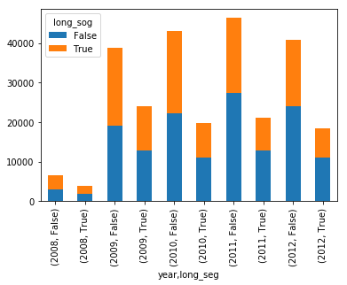

I have been working quite a bit with Python recently, using the popular Jupyter Notebook interface. Have been thinking about uploading some of my machine learning experiments and notes on the blog but integrating python with a blog built on blogdown seems problematic as I could not google a solution. Turns out it is actually quite simple (maybe that’s why nobody posted a tutorial on it, or maybe people who blog in R do not really use Python).
Anyway, here’s the solution:
From the cmd line navigate to the folder which contains the notebook file and run the following line substituting Panda_Plotting for the name of your ipynb file.
jupyter nbconvert --to markdown Panda_Plotting.ipynb
This generates a .md file as well as a folder containing all the images from that file. In my case the folder was named Panda_Plotting_files.
Copy the image files to the static folder where the website is located. I placed my files in the static/img/python_img folder.
Now all that is left to be done is to create a new post in markdown format,
new_post('Hello Python World', ext='.md')
copy the markdown file over, and replace all the image directory paths to point to the newly created one in the static folder.
Here’s my Panda_Plotting.ipynb file converted to markdown and hosted on my blog. It displays markdown and all the output quite nicely!
Converted Jupyter Notebook File
%matplotlib inline
import pandas as pd
import numpy as np
from datetime import datetime
import matplotlib.pyplot as plt
plt.plot(np.random.normal(size=100), np.random.normal(size=100), 'ro')
[<matplotlib.lines.Line2D at 0x22850dc7780>]

Using pandas plotting functions
Line Graphs
normals = pd.Series(np.random.normal(size=10))
normals.plot()
<matplotlib.axes._subplots.AxesSubplot at 0x22850eef940>

normals.cumsum().plot(grid=True)
<matplotlib.axes._subplots.AxesSubplot at 0x22850ca6c88>

variables = pd.DataFrame({'normal': np.random.normal(size=100),
'gamma': np.random.gamma(1, size=100),
'poisson': np.random.poisson(size=100)})
variables.cumsum().plot()
<matplotlib.axes._subplots.AxesSubplot at 0x228511b5940>

variables.cumsum().plot(subplots=True)
array([<matplotlib.axes._subplots.AxesSubplot object at 0x00000228511F13C8>,
<matplotlib.axes._subplots.AxesSubplot object at 0x00000228512DD710>,
<matplotlib.axes._subplots.AxesSubplot object at 0x00000228511E9208>], dtype=object)

### More control over subplots
fig, axes = plt.subplots(nrows=1, ncols=3, figsize=(12, 4))
for i,var in enumerate(['normal','gamma','poisson']):
variables[var].cumsum(0).plot(ax=axes[i], title=var)
axes[0].set_ylabel('cumulative sum')
<matplotlib.text.Text at 0x22851427160>

Bar Graphs
segments = pd.read_csv("./data/transit_segments.csv")
segments.st_time = segments.st_time.apply(lambda d: datetime.strptime(d, '%m/%d/%y %H:%M'))
segments['year'] = segments.st_time.apply(lambda d: d.year)
segments['long_seg'] = (segments.seg_length > segments.seg_length.mean())
segments['long_sog'] = (segments.avg_sog > segments.avg_sog.mean())
segments.groupby('year').seg_length.mean().plot(kind='bar')
<matplotlib.axes._subplots.AxesSubplot at 0x2285271bd68>

segments.groupby(['year','long_seg']).seg_length.count().plot(kind='bar')
<matplotlib.axes._subplots.AxesSubplot at 0x21c6332e6a0>

### Stacked Bars
temp = pd.crosstab([segments.year, segments.long_seg], segments.long_sog)
temp.plot(kind='bar', stacked=True)
<matplotlib.axes._subplots.AxesSubplot at 0x21c6bda5908>

Histograms
variables = pd.DataFrame({'normal': np.random.normal(size=100),
'gamma': np.random.gamma(1, size=100),
'poisson': np.random.poisson(size=100)})
variables.normal.hist(bins=30, grid=False)
<matplotlib.axes._subplots.AxesSubplot at 0x21c4ae920f0>

variables.poisson.plot(kind='kde', xlim=(-4,6))
<matplotlib.axes._subplots.AxesSubplot at 0x21c0a84fb00>

variables.gamma.hist(bins=20, normed=True)
variables.gamma.plot(kind='kde', style='r--')
<matplotlib.axes._subplots.AxesSubplot at 0x21c0dacae80>

Scatterplot
segments.plot(kind='scatter', x='seg_length', y='avg_sog')
<matplotlib.axes._subplots.AxesSubplot at 0x241ae3c65f8>

segments_subset = segments.loc[1:10000,['seg_length', 'avg_sog', 'min_sog', 'max_sog']]
pd.plotting.scatter_matrix (segments_subset, figsize=(12,8), diagonal='kde')
array([[<matplotlib.axes._subplots.AxesSubplot object at 0x00000241AE461BA8>,
<matplotlib.axes._subplots.AxesSubplot object at 0x00000241B63B4A20>,
<matplotlib.axes._subplots.AxesSubplot object at 0x00000241B405A898>,
<matplotlib.axes._subplots.AxesSubplot object at 0x00000241AE5B85C0>],
[<matplotlib.axes._subplots.AxesSubplot object at 0x00000241AE75A748>,
<matplotlib.axes._subplots.AxesSubplot object at 0x00000241AE75A780>,
<matplotlib.axes._subplots.AxesSubplot object at 0x00000241AF813D30>,
<matplotlib.axes._subplots.AxesSubplot object at 0x00000241AF857160>],
[<matplotlib.axes._subplots.AxesSubplot object at 0x00000241AF8E36A0>,
<matplotlib.axes._subplots.AxesSubplot object at 0x00000241AF8F3BA8>,
<matplotlib.axes._subplots.AxesSubplot object at 0x00000241AF9AD4E0>,
<matplotlib.axes._subplots.AxesSubplot object at 0x00000241B06B1BA8>],
[<matplotlib.axes._subplots.AxesSubplot object at 0x00000241B072D320>,
<matplotlib.axes._subplots.AxesSubplot object at 0x00000241B078F5C0>,
<matplotlib.axes._subplots.AxesSubplot object at 0x00000241B080A278>,
<matplotlib.axes._subplots.AxesSubplot object at 0x00000241B0CA8BA8>]], dtype=object)